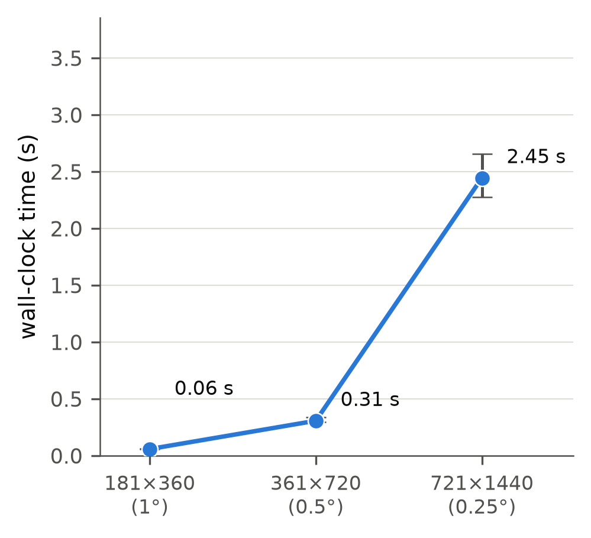
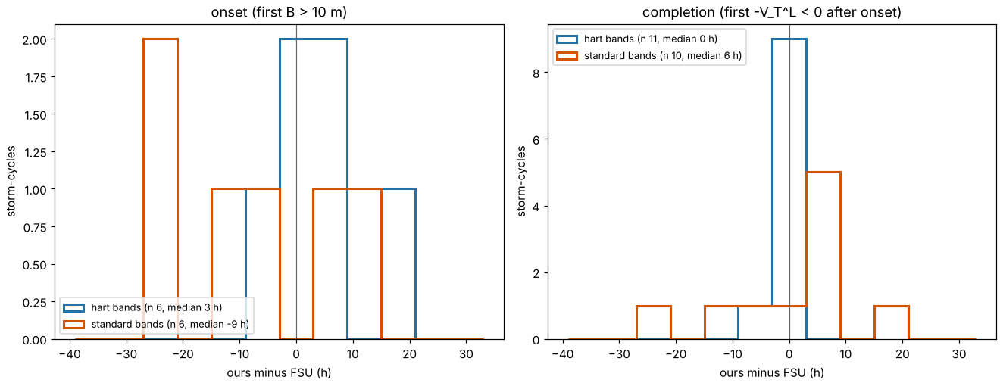
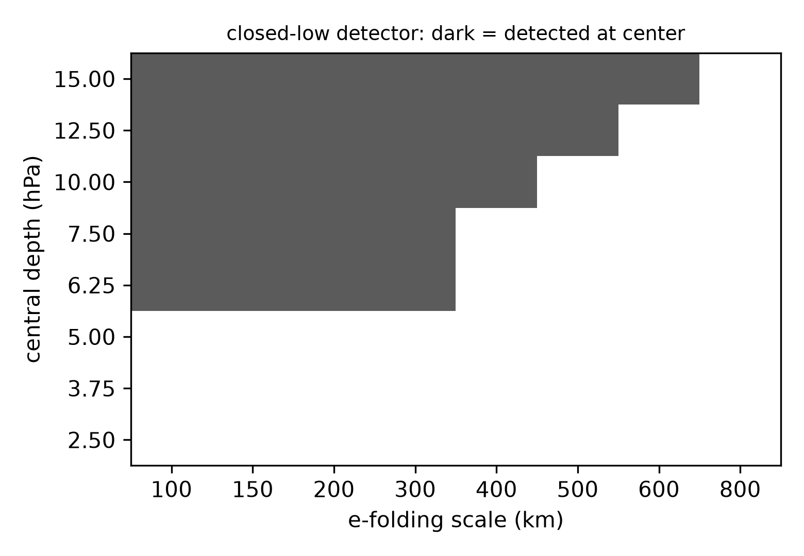
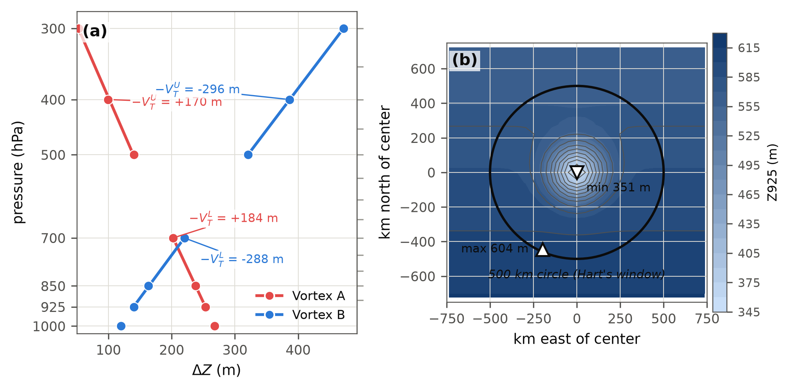
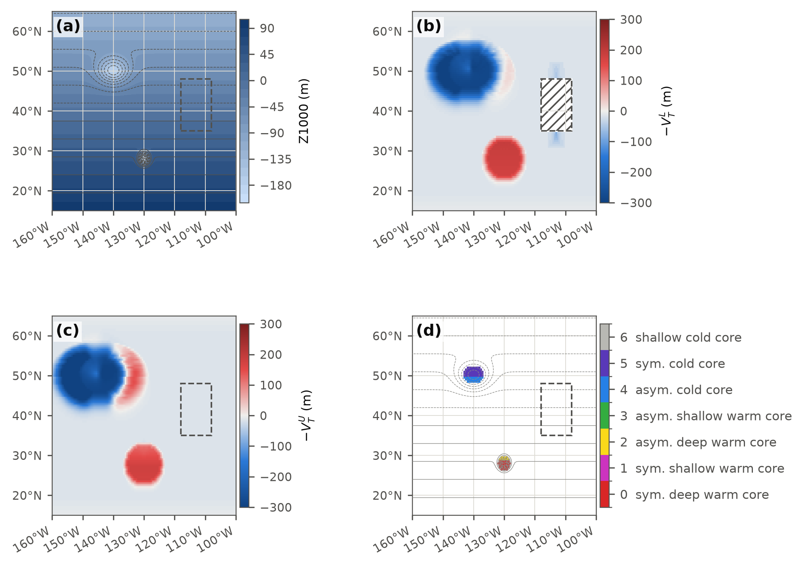
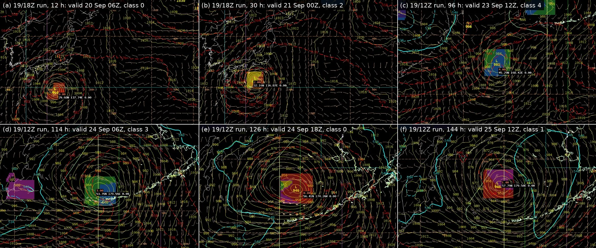

Hart's Cyclone Phase Space Presented for the Forecast Desk: the Same Three Parameters at Every Closed Low on Every Forecast Frame, as a Live Global Map and as AWIPS Derived Parameters
Abstract
The cyclone phase space of Hart (2003) locates a cyclone by two thermal wind parameters, from the vertical change of the height perturbation within 500 km of the center, and a low-level thermal asymmetry B, from which Evans and Hart (2003) read the onset and completion of extratropical transition. Nothing in the method is changed here: the parameters, the 500 km circle, the layers, the thresholds and the onset and completion rules are Hart's and Evans and Hart's. What changes is the presentation. Published evaluations follow a storm tracker and show one storm's diagram; here the same three parameters are evaluated on every forecast frame at every grid point and reported at every closed low a 5 hPa ring test on mean sea level pressure finds, so that a forecaster sees every low of a run classified on the chart they already read. Hart's circle is evaluated by sliding extrema along the chords of the disk, which costs about 6 s per global 0.25° frame on his 50 hPa layers; B is the difference of semicircle means across the window-mean deep-layer wind, a steering-flow stand-in for the storm motion a single frame cannot supply; and one categorical field assigns each low to one of seven cells cut from his space by his thresholds. The engine runs as a live global map of the current GFS run, on which every closed low is classified on every frame and persisting lows are linked into tracks that carry Hart's own motion-relative B, and as AWIPS II derived parameters, on Hart's layers where the model carries them and on standard levels elsewhere. Over 26 GFS cycles the tracked lows were compared with the Florida State University phase diagrams of the same runs, digitized from the published images, at 517 hours timed on both diagrams: with Hart's layers and the track motion, B agrees to +0.8 m bias and 11 m root mean square, the thermal wind terms to 51 and 39 m, the joint class 75% of the time (Cohen's kappa 0.68) and completion within 6 h in 10 of 11 storms. Separating the two substitutions the single-frame fields make, the standard-level bands cost 6 to 9 points of class agreement at any choice of B and the steering flow 8 points at either band choice. Both sides read the GFS, so the comparison is of implementations, not of either against observed structure; on synthetic fields the gridded code matches the storm-centered reference to 1%, by construction.
1. Background
Cyclone phase space (CPS) describes a cyclone's thermal structure from the geopotential height field alone (Hart 2003). Three numbers locate a storm in the space (Figure 1): B, the left–right asymmetry of low-level thickness across the storm's track, and the lower- and upper-tropospheric thermal wind parameters −VTL and −VTU, positive for a warm (tropical-like) core and negative for a cold (baroclinic) one. Structure matters to marine forecasting because it anticipates two behaviors a track and intensity forecast alone do not: a storm undergoing extratropical transition (ET) typically expands its wind field well beyond the radius it carried as a tropical cyclone (Jones et al. 2003; Evans and Hart 2003), and a storm that completes ET into a warm-seclusion cyclone, the frontal-fracture structure of Shapiro and Keyser (1990), can re-intensify to hurricane-force winds far outside the tropics (Hart 2003; Hart et al. 2006). Evans and Hart (2003) defined objective ET onset as the hour B exceeds 10 m and completion as the hour −VTL turns negative; the upper warm core usually goes first (Hart et al. 2006).
The parameters have been computed from gridded model and reanalysis fields many times, in every case along a track: on Hart's own real-time page; in ET climatologies from reanalyses (Kitabatake 2011; Studholme et al. 2015; Bieli et al. 2019a,b), a climate model (Bieli et al. 2020) and high-resolution simulations (Zarzycki et al. 2017; Michaelis and Lackmann 2019); in the verification of operational structure forecasts (Evans et al. 2006; Veren et al. 2009); and in studies of how consistently objective criteria time ET (Kofron et al. 2010; Studholme et al. 2015). The nearest relative of the present work is ExTraTrack (Zarzycki et al. 2017; Ullrich et al. 2021), which evaluates Hart's quantities within 500 km of each point of a TempestExtremes track, with B split across the bearing between consecutive positions and a 24 h running mean on the result. The lower layer varies between implementations, from Hart's 900 to 600 hPa to 925 to 700 hPa (Studholme et al. 2015) and a two-level 850 to 500 hPa difference (Bieli et al. 2020).
This article adds no diagnostic to that list. The three parameters, the circle, the layers, the thresholds and the onset and completion rules are used exactly as Hart (2003) and Evans and Hart (2003) defined them. What is done here is to present them differently for the forecaster: evaluated on every frame at every grid point rather than along a track, reported at every closed low a ring test on MSLP finds, and shown on the chart the forecaster already reads, in the workstation on any model with nothing run in advance, and on a map of every low in a run at once. A per-frame detector of closed lows is the first half of any feature tracker, and TempestExtremes has one; evaluating Hart's parameters at its output on every frame is, as far as we can find, only a matter of nobody having had reason to do it cheaply enough for a global grid before. The live map does link its lows from frame to frame, a tracker of the simplest kind, but only to carry a path and Hart's motion-relative asymmetry. The per-frame presentation carries one cost: a single frame has no track from which to take the storm motion that B is defined across, so the gridded B takes its direction from the steering flow (Section 2), a substitution we found no earlier test of, measured in Section 5. The seven classes are the cells cut by Hart's thresholds from the space he defined, given a color each so that the state can be shown as one field; they are not the seven data-derived clusters of Arnott et al. (2004) and Studholme et al. (2015), which share the number by coincidence.
Operational access to the parameters has been through the storm-centered diagrams of the Florida State University cyclone phase page (Hart, cited 2026), drawn for the cyclones its tracker finds in a fixed set of models, which National Hurricane Center forecasters cite as supporting evidence (National Hurricane Center 2008a,b, 2023; Hart 2021), and the International Workshop on Tropical Cyclones has called for further diagnostics built on the phase space (WMO 2025). Those diagrams show one storm at a time, off the forecaster's workstation. The product described here turns the phase space around: the map first, every closed low classified on every frame, and the storm's path through the space one click away.
![Two-panel schematic of Hart's cyclone phase space diagrams sharing one 168-hour extratropical transition trajectory colored from light to dark blue by forecast hour. Left: parameter B against the lower thermal wind, the four asymmetry and warm/cold quadrants shaded and labeled, the trajectory crossing the B equals 10 meter onset line and then the negative lower thermal wind equals zero completion line, both crossings marked with an x, and a dashed branch toward a warm seclusion point in the symmetric warm core quadrant. Right: lower against upper thermal wind, the four structural quadrants shaded and labeled, the same trajectory and warm seclusion branch.](figures/fig10_two_diagrams.png)
2. Method
At each pressure level p, the height perturbation amplitude is the spread of geopotential height over an analysis window W:
ΔZ(p) = maxW Z − minW Z
Hart's window is a 500 km circle around the storm's own moving center; a gridded parameter has no such center, so the same circle is re-centered on every grid point. The radius is held in kilometers: the disk is laid down row by row, each row offset contributing a chord whose length in grid cells follows that row's own spacing, so the footprint scales with the cosine of latitude and wraps in longitude. On synthetic vortices the gridded disk matches the storm-centered circle of the reference implementation of Hart's method written for this work to within 0.2% (Appendix B). A background height gradient enters Hart's circle by definition, and because it grows with height in a baroclinic zone it lowers both terms of any storm embedded in one, in his formulation as in this one: the fall of the upper term as a storm meets a trough is the transition signal itself. At a grid point that is not a height extremum the range reduces to the gradient integrated along the longest chord of the disk, so away from the lows the gridded thermal wind terms are a filtered measure of how the magnitude of the height gradient changes with height, and the gridded B is the thickness contrast across the steering flow. Those fields mean Hart's parameters only at a cyclone center, where the extrema are the storm's own, which is why the class is reported only inside the closed-low mask below and the live map fades the three fields away from the lows. The thermal wind for a layer is the least-squares slope of ΔZ against ln(p) over that layer's levels:
−VT = ∂(ΔZ) / ∂(ln p)
positive when ΔZ shrinks with height (warm core), negative when it grows (cold core). Hart's layers are 900 to 600 and 600 to 300 hPa at 50 hPa spacing, and the package uses them wherever the model carries those levels: on the live map, in the daily collection and in AWIPS on the GFS. On a model without the 50 hPa levels the AWIPS fields fall back to the standard levels, with the lower term the mean of the 925/850/700 and 850/700/500 hPa slopes, which tracks Hart's band with a root mean square difference of 25 m and a bias of −16 m on the five synthetic profiles of Figure 8 against 44 m and +38 m for 925/850/700 alone, the upper term over 500/400/300 hPa (20 m against Hart's band; every estimator that pulls 700 hPa into the upper band is worse), and B from the 925 to 700 hPa thickness rescaled by λ = ln(900/600)/ln(925/700) = 1.455. The plain 925/850/700 band, the package's original choice, remains as a last resort for a model without 500 hPa height. A level is blanked below ground before any window filter runs, where the surface pressure is below the smaller of the level's pressure and 900 hPa, and a level whose window is less than half valid is blanked rather than fitted. The table lists which product uses which layers, which asymmetry and which smoothing.
| Product | Thermal wind layers | B thickness and motion | Smoothing |
|---|---|---|---|
| Live map, untracked lows and the three fields | 900 to 600 and 600 to 300 hPa, 50 hPa levels | 900 to 600 hPa thickness across the window-mean steering flow | none; each frame on its own |
| Live map, tracked lows | 900 to 600 and 600 to 300 hPa, 50 hPa levels | 900 to 600 hPa thickness across the track's own motion, with hysteresis on the class | none on the values; the class holds until a wall is crossed by a margin |
| Daily collection and the comparison of Section 5 | 900 to 600 and 600 to 300 hPa, 50 hPa levels (standard levels kept beside them) | 900 to 600 hPa thickness across the track's motion | 24 h centered running mean, as the Florida State diagrams |
| AWIPS, GFS | 900 to 600 and 600 to 300 hPa, 50 hPa levels | 900 to 600 hPa thickness across the steering flow | none |
| AWIPS, other models | mean of the 925/850/700 and 850/700/500 hPa slopes; 500/400/300 hPa | 925 to 700 hPa thickness rescaled by λ, across the steering flow | none |
| AWIPS, last resort | 925/850/700 and 500/400/300 hPa | as above | none |
Classification is restricted to closed lows by two tests on mean sea level pressure (MSLP). A grid point is a candidate center if its MSLP is within 0.6 hPa of the minimum over a 300 km neighborhood, and it is accepted if the mean MSLP over the 300 to 500 km ring around it exceeds its own by at least 5 hPa. MSLP is the surface the forecaster already contours, so the lows the detector finds are the lows on the chart. The test measures relief between center and ring rather than depth, so its floor is about 6 hPa for a compact low and 12.5 to 15 hPa for a broad one (Figure 9). Accepted centers are dilated by 200 km to form the region in which the class and the continuous index, index = 2 tanh(−VTL/100) + tanh(−VTU/100), are reported; the index is a display heuristic, and the class is the product to reason from.
Parameter B
Hart's third number is a left–right asymmetry. Over the same 500 km circle, split into a right and a left half relative to the storm's direction of motion,
B = h (ZR − ZL)
where ZR and ZL are the mean 900 to 600 hPa thickness over the right and left halves and h is +1 in the Northern Hemisphere and −1 in the Southern, so that warm air to the right of the track in the Northern Hemisphere reads positive; the same storm in the same thickness field reads positive moving one way and negative moving the other (Figure B5). Evans and Hart (2003) took 10 m as the threshold between a symmetric and an asymmetric thickness field. A grid point has no track, so the package evaluates the same semicircle difference about every point with a motion proxy in place of the track. At each point the mean thickness is taken over the north, south, east and west half-disks of radius 500 km, each built from cumulative sums along the rows with area weights and the longitude wrap, and for a motion unit vector (mx, my)
ZR − ZL = mx (ZS − ZN) + my (ZE − ZW), B = h (ZR − ZL) λ
the wavenumber-one interpolation between the two axis-aligned splits, exact for any wavenumber-one pattern about the point, a uniform gradient and a storm-scale dipole alike; odd harmonics k ≥ 3 are not captured, and their weight in Hart's difference is bounded by (4/π)/k of their amplitude (checks in Appendix B). The motion proxy is the 850 to 300 hPa mean wind averaged over the window; the area mean of the geostrophic wind depends only on the height along the window's boundary, so a vortex whose perturbation vanishes there contributes nothing and what remains is the deep-layer steering flow. Below a window-mean speed of 2 m/s the heading is undefined and B is set to missing. The rescaling λ, used only where the thickness is 925 to 700 hPa, assumes the same temperature contrast in both layers; in a shallow baroclinic zone the deeper layer's contrast is the smaller, so λ overstates B there, by about 1 m on the archive (Section 5).
The steering flow stands in for the storm motion because a derived parameter sees one frame; Hart (2003), Kitabatake (2011), Studholme et al. (2015) and ExTraTrack all take the motion from consecutive track positions. The two differ where the storm does not move with its deep-layer steering: a storm slowed by a block, a low deepening in place, a system steered by a shallower or deeper layer. The gridded B is therefore the thickness asymmetry across the steering flow, and the field is labeled that way on the live map. Where the export links a low across frames (Section 4), Hart's B is also computed from the track's own motion by the same half-disk means, and the class of a tracked low is read from that value; Section 5 measures the difference.
Joint classification
Hart (2003) defines the phase space as three-dimensional, with B, −VTL and −VTU on its axes, and shows it as two cross-sections that share the −VTL axis because two planes read better on paper than a box. The space and its thresholds are his; HCPSclass only names the cell a low falls in, so that the state can be drawn as one colored field, and the live map renders the box with the two diagrams beside it. Classifying on all three parameters at once keeps the asymmetry of one diagram and the warm-core depth of the other, and reduces the task to sampling one field at the low. HCPSclass uses Hart's thresholds, B against 10 m and both thermal wind terms against 0, with no neutral band. The joint space has eight cells; the two with a cold lower and warm upper core, a perturbation peaking at mid-levels that the asymmetry does not further characterize, are merged, giving seven classes (table; the quadrants are those of Figure 1). The colors form three groups so that onset and completion read as abrupt shifts: reds for a symmetric warm core, yellow and green for a storm in transition, blues for a cold core.
| Code | Color | Name | B | −VTL | −VTU | Typical system |
|---|---|---|---|---|---|---|
| 0 | red | symmetric deep warm core | ≤ 10 | warm | warm | hurricane, typhoon |
| 1 | magenta | symmetric shallow warm core | ≤ 10 | warm | cold | subtropical storm, or warm seclusion once B falls |
| 2 | yellow | asymmetric deep warm core | > 10 | warm | warm | hurricane meeting a trough, transition beginning |
| 3 | green | asymmetric shallow warm core | > 10 | warm | cold | transition under way |
| 4 | blue | asymmetric cold core | > 10 | cold | cold | extratropical low, transition complete |
| 5 | indigo | symmetric cold core | ≤ 10 | cold | cold | occluded or cutoff cold low |
| 6 | gray | shallow cold core (lower cold, upper warm) | any | cold | warm | perturbation peaking at mid-levels |
| blank | no closed low in MSLP, below ground (HVTL missing), or B undefined (window-mean steering below 2 m/s) | |||||
The codes are ordered along a typical extratropical transition (0, 2, 3, 4). A warm seclusion re-forms a low-level warm core under a cold upper core, so −VTL turns positive again: class 4 to 3 while the bent-back front keeps B above 10 m, and 4 to 1 if B also falls (Hart et al. 2006). Figure 2 traces both paths with four other synthetic life cycles, among them the tropical transition of a subtropical storm (Evans and Guishard 2009; Guishard et al. 2009). HCPSclass reports a state, not an event: a storm whose B passes 10 m in the same frame that −VTL passes zero moves from 0 to 4 without visiting 2 or 3, so onset and completion are read as the frames at which HB crosses 10 m and HVTL crosses zero.
![Six small perspective views, in two rows of three, of the same three-dimensional box seen from the same angle, whose axes are the lower thermal wind, parameter B and the upper thermal wind, all in meters. In every panel, planes at B equals 10 meters and at zero on both thermal wind axes cut the box into cells, drawn as translucent boxes in the seven class colors and numbered 0 to 6, with the gray class 6 cell spanning both sides of the B plane where the lower core is cold and the upper warm. Each panel traces one synthetic 168 hour life cycle, the gridded path as squares and line segments colored by class and Hart's path as a thin gray line with small circles, the start circled, the end boxed and markers growing with the central pressure depth and hours labeled every 12 hours, with a marker size legend below. Panel a, extratropical transition: from the symmetric deep warm core cell through the asymmetric warm cells to the asymmetric cold cell, then the symmetric cold cell and the symmetric shallow warm cell, with onset at 42 hours and completion at 108 hours marked with crosses. Panel b, tropical cyclone decay: a short straight path that stays in the symmetric deep warm core cell, moving toward the origin. Panel c, warm seclusion: from the asymmetric cold cell into the asymmetric shallow warm cell, the symmetric shallow warm cell and finally the symmetric cold cell. Panel d, cold-core occlusion: from the asymmetric cold cell into the symmetric cold cell. Panel e, tropical transition: from the asymmetric cold cell through the asymmetric and symmetric shallow warm cells into the symmetric deep warm core cell. Panel f, hybrid: a zigzag that crosses the B equals 10 meter plane back and forth between the symmetric and asymmetric shallow warm cells. A legend below names the seven classes and the path symbols.](figures/figJ_phase_space_3d.png)
An interactive version of this figure is at figures/phase_space_3d.html: one life cycle at a time, rotatable and read by hovering, with a switch to Hart's two diagrams.
Relation to the storm-centered diagrams
This package and the Florida State University diagrams (Hart, cited 2026) compute the same three numbers. Hart evaluates at one tracked center and draws a trajectory; this package evaluates every grid point and draws a map per hour, recovering the trajectory by linking the lows. Both use a 500 km circle and, where the model allows, the same layers; the standard-level fallback reads a shallow warm core two to three times Hart's value (Figure 8). Both take B from semicircle means, his split by the tracker's motion, this package's by the steering flow or, once a low is linked, by the track's motion. The page smooths with a 24 h running mean; the fields here are instantaneous and noisier frame to frame (Section 6). Both see every feature within 500 km, so a second low or a strong upper trough inside the circle enters ΔZ at every level.
3. Data
The archive behind the comparison of Section 5 is the daily collection of Section 4: 26 GFS 0.25° cycles, the 12 UTC run of every day from 24 September to 17 October 2026 with the 18 UTC run of 24 September and the 00 UTC run of 2 October, each storm followed to 198 h, 187 storm-cycles in all, of which 159 have the Florida State diagrams of the same storm and run saved beside them. The page computes its diagrams, as each states, from the 0.5° GFS with a 24 h running mean, and publishes them only as images, so their values were digitized (Section 5; Appendix A). Phase-space magnitudes depend on the resolution and dataset they are computed from (Manning and Hart 2007), so the two sides are compared in sign and timing more than in magnitude. The first checks on the CAVE display, made on five September 2026 GFS cycles before the archive existed, are kept as Appendix C. The synthetic material behind Figures 1, 2, 7, 8, 9 and Appendix B is defined in the figure scripts and summarized figure by figure in Appendix A.
4. Implementation
The diagnostics are implemented as AWIPS II D2D derived parameters, evaluated on demand in CAVE's embedded Python interpreter, one frame at a time, from grids already in the local inventory, with no server process, scheduled job or external tracker. The inputs are geopotential height on the band levels, surface pressure, MSLP for the detector under whichever name the inventory carries, and the 850 to 300 hPa winds with the Coriolis pseudo-field for the motion proxy and the hemisphere sign. The circular window is not a per-pixel scan of the disk: each row gets one sparse table of extrema over runs of 2k columns, from which the sliding extremum along every chord width is read as the combination of two overlapping runs. A full classification on standard levels takes a median of 2.45 s per forecast hour on a 0.25° global grid (Figure 3), of which the B step is 0.66 s, and about 6 s on Hart's seven-level bands. The installed footprint is one Python module, five derived-parameter definitions (HVTL, HVTU, HB, HCPSidx, HCPSclass), each carrying its method blocks in the order of the product table so that a model is read on the richest level set it carries, and two colormaps. HVTL and HVTU are −VTL and −VTU, positive for a warm core; HB is B in meters after any rescaling.

The live map and the tracked storms
The same functions run outside AWIPS in a standalone package on public GFS output, and that is the form in which the product is meant to be used first. Every six hours an export evaluates the four fields on every frame of the latest 0.25° run, out to 198 h, on Hart's layers, finds every closed low, and links the lows from frame to frame: a low is continued to the nearest closed low within 600 km of the position its recent motion projects, one missing frame is bridged, a track is kept once the low has stayed closed for 24 h, and minima on high terrain are left off the tracks. The live map draws the class at every low, the three fields faded away from the lows, the tracks, and for any low the forecaster clicks, the whole track through Hart's three-dimensional space (Figure 2) or his two cross-sections, marker size following the central pressure, a label every 12 h and the timeline driving both. For a tracked low the map shows Hart's B from the track's own motion and the class read from it, with the steering-flow B beside it. The same export runs daily as a collection that follows every Northern Hemisphere low below 980 hPa through its life in the run and pairs it with the Florida State diagram of the same storm and run; its archive is the basis of Section 5. The derived parameters in CAVE are the same engine on a single frame, inside the workstation, on any model.
Because half of the archive's hours sit within 10 m of the B = 10 m wall and the class changes at 21% of six-hour steps (Section 6), the live map colors each tracked low by a hysteresis class: the class of the previous hour is kept until B has moved 5 m past its wall (above 15 m to become asymmetric, below 5 m to become symmetric) or a thermal wind term is 10 m beyond zero, with the class 6 rule unchanged. Beside it the map quotes the margin, the distance in meters from this hour's values to the nearest wall that would change the strict class, and marks it when under 5 m, so a class read at a low carries its own uncertainty. On the first cycle exported this way the held class differed from the strict class at 6% of tracked hours. Untracked lows and the CAVE field carry the strict class.
What the forecaster does with a class. The class is a statement about structure, not a wind or seas forecast, and it is read beside the pressure analysis rather than instead of it. A low in classes 0 to 3 (warm core) carries its strongest winds in a tight ring near the center, and a tropical or subtropical system that keeps a warm core as it moves poleward keeps that ring; a low whose class sequence runs 0 or 1, then 2 or 3, then 4 or 5 is in Hart's extratropical transition, and the hours at which B crosses 10 m and −VTL crosses zero are Evans and Hart's onset and completion, in the run the forecast is being written from; after completion the wind field broadens, the strongest winds move to the poleward and western side, and the wave field widens with it. A symmetric shallow warm core (class 1) late in an extratropical cyclone's life is a warm seclusion, with a compact wind maximum close to the center under a cold upper trough. The live map adds the margin to the nearest threshold, and for a tracked low holds the class until a wall is crossed by that margin, so a class sitting a few meters from a wall reads as uncertain rather than flipping from frame to frame. A blank at a low means one of three things, which the forecasters' guide lists: the low fails the 5 hPa ring test and is not closed by this definition, a level in the band is below ground and the term is not evaluated, or the model does not carry a level the band needs. The map and CAVE are first looks; the storm's own path through the phase space on the map, or the Florida State diagram where that page has the storm, is the confirming read.
5. Results
Against the Florida State diagrams over 26 cycles
The archive of Section 3 allows the comparison to be made in numbers, on every storm the collection followed that the Florida State page also drew: 159 storm-cycles with 318 diagrams. Each diagram was digitized (Appendix A), and an hour counts as verified when it was timed independently on both diagrams of a storm and the two readings of −VTL, which the diagrams share, agree: 517 hours are verified and 1110 usable. Against 48 points read by hand the digitizer agrees to 0.2 m in B and 0.07 m in the thermal wind, negligible beside the differences below. Our tracks were smoothed with the same 24 h centered mean the diagrams carry and paired at the shared hours of the same run, and evaluated two ways: with the standard-level bands and the steering-flow B of the gridded fields, and with Hart's bands and the track-motion B on the 900 to 600 hPa thickness, the live map's choices.
| Term | Bands | All | Warm lower core | Cold lower core | Faster than 20 kt | 20 kt or slower |
|---|---|---|---|---|---|---|
| B | standard, steering-flow B | +7.7 / 16.0 (505) | +6.0 / 12.5 (321) | +10.7 / 20.8 (184) | +6.8 / 14.3 (82) | +7.8 / 16.3 (421) |
| B | Hart's, track-motion B | +0.8 / 11.2 (515) | +0.1 / 8.2 (333) | +2.1 / 15.2 (182) | +2.5 / 12.2 (82) | +0.5 / 11.0 (433) |
| −VTL | standard, steering-flow B | +11.9 / 56.0 (517) | +7.3 / 48.2 (333) | +20.3 / 67.9 (184) | +2.9 / 83.4 (82) | +13.1 / 48.5 (433) |
| −VTL | Hart's, track-motion B | −14.2 / 50.7 (517) | −10.4 / 43.6 (333) | −21.0 / 61.4 (184) | −30.2 / 83.0 (82) | −11.2 / 42.0 (433) |
| −VTU | standard, steering-flow B | −2.3 / 52.4 (517) | −10.1 / 46.2 (333) | +11.8 / 62.1 (184) | −9.2 / 67.1 (82) | −0.9 / 49.3 (433) |
| −VTU | Hart's, track-motion B | −6.6 / 39.4 (517) | −4.1 / 37.0 (333) | −11.2 / 43.3 (184) | −16.5 / 54.9 (82) | −4.5 / 35.6 (433) |
Three things follow. First, the band difference is measured: on the same tracks the standard-level lower band reads 17 m above Hart's band on average over the archive, 26 m on the verified hours, and against the diagrams the two sit on opposite sides, the standard band 12 m high and Hart's 14 m low, with the cold cores the worse regime under both; the upper term, whose bands are closer, is −2 and −7 m. What remains with Hart's own bands, a low bias of 10 to 20 m and a scatter of 40 to 50 m, belongs to the rest of the comparison, 0.25° against 0.5°, a running mean that on the page reaches back before the run, two trackers placing the center and the diagrams' rounding, and is largest for fast storms, where a center displaced by one frame's motion changes the window's contents most. Second, the steering-flow substitution is measured: the gridded B runs +7.7 m above the diagrams where the track-motion B runs +0.8 m above, with 16 m scatter against 11, and on our own tracks the two differ by +5.8 m for storms under 10 kt and +1.2 m above 40 kt, with the class differing at 17% of the slow hours and 4% of the fast. Third, the class. The two rows of the table change the bands and the way B is taken at once, so the table below separates them: every combination of the two band choices with three B choices. The joint class agrees with the diagram's at 55% of the verified hours with the gridded fields' choices and at 75% with the live map's, Cohen's kappa 0.43 and 0.68 against a majority-class baseline of 35%, the diagrams' most common class being the symmetric shallow warm core. Taking the motion from the track is worth 8 points at either band choice, the 900 to 600 hPa thickness for B 3 to 5 more, and Hart's bands 6 to 9 points at any B choice; neither substitution accounts for the difference alone. The three signs that make the class agree separately at 82, 91 and 97% in the best cell, and of its 131 disagreements 69 are the B side alone, 30 the lower sign alone, 7 the upper sign alone and 25 more than one, with 57% of them within 5 m of the boundary crossed; the confusions are mostly across the B wall, classes 4 against 5 and 3 against 1. For the timing, among the storms both sides carry across a threshold inside the run, completion falls within 6 h of the diagram's in 10 of 11 with the live map's choices and 7 of 10 with the gridded fields', median differences 0 and +6 h, and onset, which depends on B alone, in 5 of 6 and 2 of 6, the steering-flow B early by 9 h at the median. The counts are small because few storms in four weeks cross a threshold inside a run on both sides. Figure 4 shows the pairs, Figure 5 the timing.
| Bands | B | Hours | Class | Kappa | B side | Lower sign | Upper sign | Near |
|---|---|---|---|---|---|---|---|---|
| standard | steering flow, 925 to 700 hPa rescaled | 505 | 55% | 0.43 | 68% | 84% | 93% | 54% |
| standard | track motion, 925 to 700 hPa rescaled | 515 | 63% | 0.54 | 78% | 85% | 93% | 60% |
| standard | track motion, 900 to 600 hPa | 515 | 66% | 0.57 | 82% | 85% | 93% | 50% |
| Hart's | steering flow, 925 to 700 hPa rescaled | 505 | 61% | 0.51 | 68% | 90% | 97% | 59% |
| Hart's | track motion, 925 to 700 hPa rescaled | 515 | 70% | 0.62 | 78% | 91% | 97% | 64% |
| Hart's | track motion, 900 to 600 hPa | 515 | 75% | 0.68 | 82% | 91% | 97% | 57% |
The comparison has limits of its own. The pairs are not independent: consecutive hours of one storm and the same storm on consecutive days are strongly correlated, so the counts overstate the effective sample. Both sides are evaluations of the GFS, so nothing here measures either method against an observed structure. The detector and the tracker chose the storms, every closed low below 980 hPa at the analysis and the lows seeded by hand, which leans the sample toward deep extratropical lows and away from weak tropical systems (Appendix D). Within those limits, the gridded engine with Hart's bands and a track reproduces the diagrams to within the differences one expects of two resolutions and two trackers, and the two substitutions the gridded fields make are each worth a measured bias.
![Six scatter plots of our values against the Florida State diagrams' digitized values, our value on the vertical axis, each with a one-to-one line. Top row, the standard bands: B with bias about 8 meters, the lower thermal wind with bias about 12 meters and the upper with bias near minus 3 meters. Bottom row, Hart's bands and the track-motion B: B with bias about 2 meters, the lower thermal wind about 14 meters low and the upper about 7 meters low, all three tighter to the line. Points are red for a warm lower core and blue for a cold one, filled where verified on both diagrams and hollow where read from one.](figures/figK_fsu_scatter.png)

Figure 6 shows what the statistics of Figures 4 and 5 are made of, for one storm: the 2 October 2026 western Pacific typhoon on Hart's two diagrams, our smoothed trajectory against the page's digitized markers. The two sides lie on top of each other through the deep warm core days and the climb in B, put onset at the same hour (114 h), and part only in the two frames of the cold-core turn, where our thermal wind terms fall faster and completion comes a frame earlier (138 against 144 h).
![Three panels. Panels a and b are Hart's two diagrams, B against the lower thermal wind and the upper against the lower thermal wind, with the quadrants shaded, the 10 meter line and the zero lines drawn. One real storm is traced on both: our trajectory from 0 to 198 hours as squares colored by class and sized by central pressure, joined by a dark line and labeled every 12 hours, and the Florida State page's digitized values at nine verified hours as hollow circles of the same sizes. The storm sits in the symmetric deep warm core quadrant for its first four days near B of zero and lower thermal wind of 60 to 170 meters, then climbs steeply through the asymmetric warm core quadrant into the asymmetric cold core quadrant between 114 and 144 hours, where the two sides diverge most, and returns to warm core after 156 hours. Panel c plots B, the lower and the upper thermal wind against forecast hour for both sides, with our minimum sea level pressure as a gray line on a right axis, and two class strips above it, ours and Florida State's, with onset and completion ticks: onset at 114 hours on both, completion at 138 hours on ours and 144 on Florida State's. A size legend along the bottom gives 990, 970, 950 and 930 hectopascals.](figures/figM_fsu_case.png)
One synthetic life cycle evaluated both ways
Real cases cannot separate the gridded reformulation from the models and trackers behind the two sides, so the two methods were also run on one synthetic life cycle where every field is known (Figure 7; Appendix A): a vortex carried 168 h from 22°N to 52°N, its profile blending from deep warm core through the transition shape to deep cold core and then to the seclusion profile of Figure 8, growing and accelerating into a baroclinic zone, with a motion-relative thermal asymmetry that peaks from 72 to 108 h. Hart's parameters are evaluated at the center with the storm-centered reference implementation; the gridded parameters come from the operational functions on the standard levels, with the deep-layer wind set equal to the track motion so both methods see the same motion vector. Both trace the same path through the classes, 0, 2, 3, 4, 5 and 1; onset falls at 42 h and completion at 108 h for both; the gridded B peaks at 40.3 m against Hart's 39.9 m and agrees over the life cycle to 1.3 m root mean square. The upper term agrees to 15 m and the lower to 45 m, the latter dominated by the seclusion phase, where the standard-level lower term recovers to +94 m against Hart's +41 m, the band effect of Figure 8. This agreement is a check of the code, not of the method: on these fields both implementations see the same prescribed ingredients, and the earlier forms of the package that it ruled out are kept in Appendix B.
![Three panels comparing Hart's method and the gridded method on one synthetic life cycle. Left: B against the lower thermal wind, two loops colored light to dark by hour, Hart's in gray and the gridded in red both reaching 40 meters, with a dotted third curve for the former first-order gridded B reaching about 30 meters, both loops starting in the symmetric warm quadrant, crossing into asymmetric warm, then asymmetric cold, and returning through symmetric cold to symmetric warm. Center: upper against lower thermal wind, both trajectories running from deep warm to shallow warm to deep cold and back to shallow warm. Right: time series of B and the two thermal wind terms for both methods, the former first-order B dotted, with two class strips along the top showing the sequence 0, 2, 3, 4, 5, 1 for each, onset and completion each at the same hour for both.](figures/figD_lifecycle.png)
6. Limitations
- Bands on models without 50 hPa levels. Figure 8 fits Hart's band and standard-level alternatives to five prescribed profiles. For a profile linear in ln p all bands agree; for a shallow warm core with cold air above, the seclusion and transition profiles, the plain 925 to 700 hPa band overstates Hart's value by 60 to 80 m while a 925 to 500 hPa band dilutes the signal almost to zero. The two-slope mean now used on those models (Section 2) is the closest estimator tried, but it has not been measured against the Florida State diagrams, since the archive carries the plain band and Hart's; the plain band reads 17 m above Hart's on the archive and costs 6 to 9 points of class agreement at any choice of B (Section 5), and puts completion about 3 h late on a 48 h synthetic transition (Appendix B).
- Window and resolution. The window is Hart's circle laid on the grid as whole cells, which matches his to within 0.2% on synthetic vortices; the earlier square window read cold cores about 50 m too cold on a GFS forecast and remains only as an option (Appendix B). Phase-space magnitudes depend on the resolution and dataset behind them (Manning and Hart 2007; Zarzycki et al. 2017), so the thresholds carry that dependence from model to model. Hart (2003) found the sign of B insensitive to the radius for conventional cyclones but not during a transition or for a small tropical cyclone, and called for a storm-size-dependent radius, which Section 7 tests. No projected grid has been tested.
- Parameter B. The semicircle means capture the wavenumber-one asymmetry exactly and not the odd harmonics k ≥ 3, such as a warm-seclusion tongue folded into one side of the circle; λ, used only on the standard-level fallback, assumes the same temperature contrast in both layers; B is missing for a stationary or steering-opposed system; and away from a low it is the environment's thickness contrast across the flow. The steering-flow substitution is measured in Section 5: +5.4 m above the track-motion B on our own tracks, most for slow storms, and a class differing at 17% of the hours under 10 kt, which is why a tracked low on the live map is read from the track-motion value.
- The detector. It measures relief between a center and the 300 to 500 km ring, so its floor rises with the breadth of the low (Figure 9): nothing is detected at 5 hPa or less, a compact 6.25 hPa low is, and a broad low needs 12.5 to 15 hPa; an open trough is never detected. On the archive 44% of MSLP minima below 980 hPa receive a class, 26% between 980 and 1000 hPa and 3% above, and 1% of minima within 25° of the equator, so the classified population is the deep and midlatitude lows, and weak tropical systems are under-represented in every statistic here (Appendix D).
- Flicker at the thresholds. HCPSclass has no neutral band and no temporal smoothing, so a storm sitting on a threshold alternates between adjacent codes. On the archive the class changes at 21% of 6 h steps and reverses within 12 h at 3.8%; 28% of all hours lie within 5 m of a wall and 52% within 10 m (median margin 9.5 m), almost always the B line, and the symmetric cold core (median margin 2.5 m) and asymmetric deep warm core (4.2 m) are the most fragile classes. Displacing the center by one grid cell changes the class for 21% of classed minima and by 100 km for 44% (Appendix D), so a tracker that places the center a cell or two from the diagram's accounts for part of the scatter of Section 5. The live map's hysteresis and margin (Section 4) are sized by these figures; the Florida State page's 24 h running mean, and the 95th percentile Bieli et al. (2020) substituted for the window maximum against the same noise, are not applied to the fields.
- Model against model. Every comparison here is between two evaluations of model fields. The parameters are only as good as the analysis or forecast behind them (Hart 2003), the comparison sets the 0.25° GFS against the page's 0.5° GFS with a 24 h mean, so part of every difference is resolution and smoothing, and none of it is a comparison against observed structure. The sample is four weeks of one autumn, correlated along each storm and across consecutive runs, with timing counts of about ten storms, and the digitizing recovers 43% of the hours the diagrams show, dropping the crowded parts of a trajectory rather than a random sample.
- The lower term is not a core temperature in a strongly baroclinic cyclone. Besson et al. (2026) find, with a center-minus-ring temperature of their own, a lower-tropospheric warm core in most midlatitude cyclones near maximum intensity in ERA5, which Hart's −VTL reads as cold because the 500 km height maximum sits in the warm sector rather than marking the core, the mechanism the background plane of Section 7 isolates. A positive lower term in classes 1 and 3 is therefore read as a seclusion only with B, the pressure trend and the surface analysis beside it.
- Below ground and the Southern Hemisphere. A level counts as valid wherever the surface pressure is at or above the smaller of that level and 900 hPa, so an extrapolated 925 hPa height can enter the window where the surface pressure is between 900 and 925 hPa, and the extrapolation differs between models. The hemisphere factor h is tested on synthetic Southern Hemisphere fields, and the live map shows that hemisphere on every frame, but no real Southern Hemisphere storm has been checked.
![Three-panel synthetic band test. Left: five prescribed height-perturbation profiles against pressure on a log axis, with Hart's 900 to 600 hectopascal lower band shaded. Center: bar chart of the lower thermal wind each band returns for each profile, Hart's band in gray, the 925 to 700 band in red, a 925 to 500 band in blue and an 850 to 500 band in green. Right: bar chart of the rescaled layer thickness gradient, a proxy for parameter B, for three baroclinic-zone profiles and the same four layers.](figures/figA_band_comparison.png)

7. Candidate extensions
Four extensions were tested on synthetic fields with the operational code, as parallel products that would leave Hart's parameters as the reference (Figure B8 and Appendix B). A storm-only core, the terms after the domain background plane is subtracted from each level, returns the isolated-vortex values exactly where the unmodified terms fall to zero in a moderate baroclinic zone; it answers a different question from the phase space, whether an intact warm core still sits under the trough, and would be a separate wind-structure diagnostic. A storm-scaled radius of 2.5 times the vortex scale holds the lower term within 5% of its true value out to 600 km scale where the fixed 500 km radius reads 51%, at the cost of admitting more environment for large storms; Hart (2003) called for such a radius. The full thickness-gradient vector would flag a storm moving straight toward colder air, which B reads as symmetric. The layer-by-layer slopes place the top of the warm core, a continuous form of the deep against shallow split. Beyond these, the ensemble form of the product, the fraction of members past each threshold by forecast hour, needs only ensemble input, and a comparison of transition timing across the models of the local inventory is the next study. The hysteresis on the tracked lows' class (Section 4) is a first answer to the flicker of Section 6; a neutral band on the thresholds, which Hart's diagrams imply by drawing them as lines on continuous axes, is the alternative to put to him.
8. Summary of findings
- Nothing in Hart's method is changed. His three parameters, on his own layers and thresholds, can be evaluated on every forecast frame at every grid point in about 6 s per global 0.25° frame and reported at every closed low before any tracking, which lets them be presented where the forecaster works: as a live map on which every low of the current GFS run is classified and the persisting lows carry a path through Hart's space and his own motion-relative B, and as AWIPS derived parameters on any model in the inventory.
- Over 26 GFS cycles and 517 verified hours, the tracked lows evaluated with Hart's layers and the track motion agree with the Florida State diagrams to +0.8 m bias and 11 m root mean square in B, 51 and 39 m in the thermal wind terms, 75% in the joint class (kappa 0.68 against a 35% baseline) and within 6 h of completion in 10 of 11 storms. Both sides read the GFS; the comparison is of implementations.
- The two substitutions a single frame forces are measured apart: the standard-level bands cost 6 to 9 points of class agreement at any choice of B, the steering flow 8 points at either band choice with a +5.4 m bias largest for slow storms. The products therefore use Hart's layers wherever the model carries them and read a tracked low from its own motion.
- Most class disagreements are near a wall: 57% lie within 5 m of the threshold crossed, and half of all hours lie within 10 m of B = 10 m. Flicker across the strict thresholds, 21% of 6 h steps, is handled on the live map by hysteresis on the tracked lows and the margin to the nearest wall; the AWIPS field keeps the strict class.
- On prescribed synthetic fields the gridded code reproduces the storm-centered reference to within 1% in B and 0.2% in the thermal wind terms, with the same class sequence and the same onset and completion hours (Appendix B); that agreement is by construction and tests the code, not the method.
- The detector's 5 hPa floor, the absence of Hart's 24 h running mean on the live products, the four-week autumn sample from one model and the lack of any comparison against observed structure are the remaining limitations.
9. Availability
The whole project is in the repository linked at the top of this page: the engine, the six-hourly export that feeds the live map, the tracker, the daily collection with its archive and the tools that digitize and compare the diagrams, the map page, the AWIPS install set, the storm-centered reference implementation of Hart's method, the guides, the source and figure scripts of this article (Appendix A), and a test suite of 213 tests, every expected value analytic or from an independent brute-force comparison. No license is specified.
Appendix A. Figure provenance and implementation notes
Every script named here is in cyclone_phase_space/article/figures/.
make_figures.py is run from the repository root
(python3 cyclone_phase_space/article/figures/make_figures.py);
the others are run from their own directory. Two implementations
appear. The operational one is cps_HartCPS.py
(cyclone_phase_space/D2D/derivedParameters/functions/), the
module CAVE runs, which the scripts import as a bare module the way
CAVE imports it, with its default circular window
(WINDOW_SHAPE = "circle"); every figure from it was
regenerated when the circle replaced the former square. The storm-centered reference is cps.hart
(cyclone_phase_space/cps/hart.py, Section 9), which
evaluates Hart's 500 km circle at one center on his 50 hPa
levels. The synthetic fields are defined in the scripts themselves;
the entries below summarize them.
Figures B3, B4 and B6 share the two-vortex domain defined in the header
of make_figures.py: a regular 0.5°
latitude-longitude grid from 160°W to 100°W and 15°N to
65°N, its rows increasing northward, on the seven standard
levels; a background height of 100 m + 7000 m
ln(1000 hPa/p) that decreases northward at 40 m per
1000 km at 1000 hPa, rising linearly in ln p to
60 m per 1000 km at 300 hPa; vortex A, a Gaussian
depression of 150 km e-folding radius at 28°N 130°W with
amplitude linear in ln p from 250 m at 1000 hPa
to 20 m at 300 hPa; vortex B, a Gaussian depression of
350 km scale at 50°N 140°W with amplitude from 120 m
at 1000 hPa to 450 m at 300 hPa and its center
displaced westward with height, linearly in ln p, by a
specified 400 km at 300 hPa (DEFAULT_TILT_KM;
the 300 hPa height minimum lands 393 km from the surface
center, Figure B6); and a terrain block of 750 hPa surface
pressure over 118°W to 108°W, 35°N to 48°N, with
1013 hPa elsewhere. The synthetic cases carry no separate
pressure field, so every script that calls the closed-low detector
(Figures 7, 8, 9 and the synthetic figures of Appendix B that show the mask) builds its MSLP input from the
1000 hPa height as 1000 hPa + Z1000/(8 m
per hPa).
- Figure 1
make_figures.py(make_fig10, writingfig10_two_diagrams.png). A schematic: no diagnostic is computed. The eight (B, −VTL, −VTU) triples are the arrayFIG10_TRAJlisted in the script, one per 24 h from 0 to 168 h, and the warm seclusion endpoint isFIG10_SECLUSION_END. Quadrant colors, labels and axis limits come fromdiagram_style.py, and the 10 m onset line fromcps_HartCPS.B_THRESHOLD_M.- Figure 2
phase_space_3d.py(figJ_phase_space_3d.png, and the interactivephase_space_3d.htmlwith its two-diagram view). Both implementations, as for Figure 7. The six life cycles are the named scenarios oflifecycle_comparison.py(SCENARIOS, onescenario_*function each, whose docstring describes its fields): the extratropical transition of Figure 7, unchanged and the default everywhere, a tropical cyclone that decays without transition, a warm seclusion, a cold-core low that occludes, the tropical transition of a subtropical storm and a hybrid near B = 10 m. Each scenario sets the same ingredients as a function of the hour: the vortex height perturbation at the eight anchor levels, the vortex radius, the amplitude of the storm-attached thickness dipole, the strength of the background gradient and the track (start, speed and heading). The script runs each throughrun_scenario, the per-frame loop of that script'smain()on its own functions (make_hours,build_track_and_motion,build_grid,env_fields,compute_frame), so the trajectories of panel (a) are the arrays behind Figure 7 and every path is Hart's from the storm-centered referencecps.hartand the gridded from the operationalcps_HartCPS.py, not a drawn curve. The script prints each life cycle's class sequence for both methods, its onset and completion hours and its plane crossings (python3 lifecycle_comparison.py --scenariosprints the same without drawing). The cell boundaries are the thresholds of the class table in Section 2, B against 10 m (cps_HartCPS.B_THRESHOLD_M) and both thermal wind terms against 0, and the cell colors are those of the shippedCPS_HartClasscolormap; the static figure is drawn with matplotlib'smplot3d, all panels from one viewing angle (elevation 20°, azimuth −40°). The same script writes the interactive version,figures/phase_space_3d.html, a self-contained page that loads Plotly fromcdn.jsdelivr.netand shows the same cells and trajectories, one life cycle at a time behind a row of buttons that switch the visible traces without moving the camera, rotatable and read by hovering. The archetypes prescribe height perturbations and no pressure; the central pressure that sizes the markers iscentral_pressure, 1013 hPa (the uniform surface pressure ofenv_fields) minus the vortex's 1000 hPa amplitudeScenario.amp(t)[0]at 8 m per hPa, the conversioncompute_frameuses to build the closed-low detector's MSLP from the 1000 hPa height; the marker diameter ismarker_diameter, 1.8 pt plus 0.20 pt per hPa of depth (the script prints each life cycle's derived range). Hour labels every 12 h are placed by_choose_label, which tries eight directions and drops a label that would overlap one already placed. The interactive page's two-diagram view (scenario_traces_2d,layout_2d) draws the quadrants, corner labels and threshold lines ofdiagram_style.pyas Plotly shapes and annotations and the same traces as the three-dimensional view.- Figure 3
make_figures.py(make_fig5,fig5_performance.png). Implementation: operational,cps_HartCPS.executeHartClass, timed onrandom_smooth_fieldinputs (a double running sum of Gaussian noise about each level's background height, random seed 20260917). Five runs per grid size; the first is discarded as the warm-up.- Figure 4
realtime/fsu_stats.py(fig_fsu_scatter.png, copied tofigK_fsu_scatter.png), run over the whole daily collection underrealtime/data/. Each storm-cycle's two Florida State diagrams, saved by the collector asfsu_phase1.pngandfsu_phase2.png, are digitized byrealtime/fsu_digitize.py: the plot frame and tick marks are located to a fraction of a pixel, the tick labels read against digit templates cut from archive plots and embedded in the module, a robust line fit maps pixels to data (every plot calibrated with a residual under 0.3 px), the header's start, current and end hours are read with the same method, the markers are separated from the shading and the ink and fitted as circles, and the markers are timed by walking the trajectory one marker at a time from the end, analysis and start glyphs, a step taken only where exactly one neighbor passes the checks on the drawn line, the drawing order, the forecast cross and the marker's size and color. An hour timed on both diagrams with the same −VTL is verified; a disagreement drops that walk. Our track (track.csv) is smoothed withtrack_cps.running_mean, the 24 h centered mean, and paired at the shared valid hours. The standard-band values arehvtl,hvtu,hb; Hart's arehvtl_hart,hvtu_hartand the track-motionhb_track, all fromtrack_cps.py. The statistics, the pairs and this figure are written torealtime/data/validation/, with 48 hand-read points on five diagrams (hand_digitized.csv) as the check on the digitizer. The class table of the same section, every band choice against every B choice with Cohen's kappa, the sign agreements, the confusion matrices and the split of the disagreements, isrealtime/class_cells.pyon the pairs file (class_cells.mdandclass_cells.jsonbeside it).- Figure 5
realtime/fsu_stats.py(fig_fsu_timing.png, copied tofigL_fsu_timing.png). Onset and completion aretrack_cps.onset_completionapplied to the smoothed series of both sides: the first hour B exceeds 10 m, and the first hour at or after it that −VTL falls below zero; a storm-cycle enters a histogram only when both sides start on the near side of the threshold and both cross it inside the run.- Figure 6
fsu_case.py(figM_fsu_case.png), run from its own directory on the archive. Our side is the storm-cycle'strack.csvinrealtime/data/2026100200/WPAC/, read withtrack_cps.read_fixes: Hart's layers (hvtl_hart,hvtu_hart) and the track-motion B on the 900 to 600 hPa thickness (hb_hart), each smoothed withtrack_cps.running_mean(the 24 h centered mean, five frames at 6 h, the window shrinking at the ends), the class of the smoothed triple fromtrack_cps.class_hart_value(blank where the archive's gridded class is blank, outside the closed-low mask) and the onset and completion fromtrack_cps.onset_completion. The Florida State side is the verified rows ofrealtime/data/validation/fsu_pairs.csvfor the storm-cycle (fsu_b,fsu_vtl,fsu_vtuby forecast hour; a row is verified whenfsu_digitize.pytimed the hour independently on both of the page's diagrams with the same lower thermal wind, Figure 4), with the same class rule and the same onset and completion rule applied over those rows. The smoothed values reproduce the pairs file's ownhb_hart,hvtl_hart,hvtu_hartexactly. Marker size ismslp_hpa, the GFS minimum at the fix, as a diameter of 2.5 pt plus 0.11 pt per hPa below 1013 hPa; the Florida State markers take our value at the same hour. Quadrants, corner labels and limits arediagram_style.py(B's lower limit opened to −30 m for the labels along B = 0, and the deep warm core label moved to its quadrant's inner corner), the class strips aretrack_cps.class_strip, and hour labels every 12 h are placed by the same eight-direction rule as Figure 2. The script prints the verified hours, both sides' onset and completion, the per-hour values and the mean and RMS difference of each parameter. The storm-cycle was chosen as one that crosses both thresholds on both sides inside the run;2026100812/AUTO_261001_01, with 14 verified hours, is the alternative the script accepts as arguments.- Figure 7
lifecycle_comparison.py(figD_lifecycle.png). Both implementations. Hart's method is the storm-centered reference,cps.hart.thermal_windandcps.hart.parameter_b, on 50 hPa levels from 900 to 300 hPa at a 500 km radius; the gridded method is the operationalcps_HartCPS.executeBand3,executeBandexecuteHartClasson the seven standard levels, sampled at the grid point nearest the storm center, with the detector's MSLP built from the 1000 hPa height as above; the dotted former B iscps_HartCPS.parameter_b_grid_gradienton the same thickness, motion and λ. Hart's class uses the same seven-code rule,cps_HartCPS.hart_class. Both are given the finite difference of the track,cps.track_motion, as the motion. The grid and standard heights come fromexperiments.py(make_grid,std_height) and the vertical profiles fromband_comparison.ARCHETYPES.- Figure 8
band_comparison.py(figA_band_comparison.png). Analytic: neither implementation is called. The slopes are least-squares fits of the prescribed ΔZ(p) profiles (ARCHETYPES) at 50 hPa spacing, and panel (c) integrates the thickness gradient of three baroclinic-zone profiles over each layer.- Figure 9
experiments.py(figB_detector.png). Implementation: operational,cps_HartCPS.closed_low_maskon MSLP, withMIN_RADIUS_KM,RADIUS_KM,DEFAULT_DEPTH_HPA,DEFAULT_BLOB_RADIUS_KMandDEFAULT_CENTER_TOL_HPAat their shipped values, on Gaussian lows built directly in MSLP (1000 hPa minus a Gaussian depression of 2.5 to 15 hPa, e-folding scale 100 to 800 km) at 45°N 165°E on a 0.25° grid, with the open trough, flat-centered and elongated lows built the same way. The same script runs the other sensitivity experiments quoted in the text: the completion-timing morph and the grid-resolution comparison of Section 6, the steering-proxy test of Section 2 (cps_HartCPS.steering,steering_window_mean), and the height-noise test of Section 6 (5 m Gaussian noise on every level, 60 realizations).- Figure B1
make_figures.py(make_fig8,fig8_thermal_wind_concept.png). Implementation: the storm-centered referencecps.hart, not the operationalcps_HartCPS.pythat the other synthetic figures use. In panels (a) and (b) each level's perturbation curve is converted to a vertical offset at 9620 m per natural-log-pressure axis unit, chosen so that 250 m, panel (a)'s largest amplitude, draws as about one third of the 1000–925 hPa tick spacing. Panel (c) runscps.hart.thermal_windon a 2D grid built bymake_gridandwarm_core_heightsfromcyclone_phase_space/tests/cps/synthetic.py(centered 30°N 0°E, 0.5° spacing, 150 km scale) on Hart's 50 hPa levels from 900 to 300 hPa (hart.LOWER_LEVELSandhart.UPPER_LEVELS); the shaded bands arecps.hart's own bands.- Figure B2
make_figures.py(make_fig9,fig9_b_concept.png). Implementation: the storm-centered reference,cps.hart.parameter_b, with local offsets and distances fromcps.hart.local_offsets_kmandcps.hart.great_circle_km, on a grid frommake_gridincyclone_phase_space/tests/cps/synthetic.py. The two halves areparameter_b's own heading convention: for motion (mx, my) a point at offset (x, y) is on the right where mxy − myx < 0, which for northeast motion is the south/east half.- Figure B3
make_figures.py(make_fig2,fig2_method.png). Implementation: operational. ΔZ in panel (a) iscps_HartCPS.delta_zatcps_HartCPS.RADIUS_KM, and the fit lines are whatcps_HartCPS.band_slopereturns overLOWER_BANDandUPPER_BAND. In panel (b) the max and min are taken over the grid points inside the circle as the module lays it (planar offsets, each row's own spacing), and they reproducedelta_zat the center. Fields: the two-vortex domain above, defined in the script's header.- Figure B4
make_figures.py(make_fig3,fig3_gridded.png). Implementation: operational. HVTL and HVTU arecps_HartCPS.executeBand3and HCPSclass iscps_HartCPS.executeHartClasson the MSLP built above, withORIENTATION_MODEset to 0 because the synthetic grid's rows increase northward.- Figure B5
make_figures.py(make_fig7,fig7_parameter_b.png). Implementation: operational. HB iscps_HartCPS.executeB(the semicircle means,parameter_b_gridandhalf_disk_means), the lower termcps_HartCPS.thermal_wind_gridand the classcps_HartCPS.executeHartClasson the MSLP built above, withHART_B_LAYER_SCALE(λ),B_THRESHOLD_M,DEFAULT_DEPTH_HPAandDEFAULT_BLOB_RADIUS_KMat their shipped values.ORIENTATION_MODEis 0 for these synthetic grids, whose rows increase northward; the operational default on the OPC build is 1, and the setting affects only which half-disk is north incps_HartCPS.half_disk_meansbehind HB and HCPSclass. The case is built byfig7_height_field,fig7_gradient_offset_m,fig7_steering_uandfig7_steering_v; a small, short-lived poleward turn of a few m/s (FIG7_STEERING_TURN_MS) is superimposed on the steering reversal between 31°N and 39°N, so that the right-hand normal sweeps through the intermediate directions and panel (b) has a B = 10 m contour to draw; the script header describes the turn as negligible at either vortex center. The script also reports the fraction of vortex A's footprint, the points within its 150 km e-folding radius, that reads class 2 rather than 0: none.- Figure B6
make_figures.py(make_fig4,fig4_tilt.png). Implementation: operational. HVTL and HVTU arecps_HartCPS.executeBand3, the classcps_HartCPS.executeHartClasson the MSLP built above with the shipped 5 hPa detector depth (DEFAULT_DEPTH_HPA), andORIENTATION_MODEis 0. Vortex B of the two-vortex domain without the terrain block.- Figure B7
lifecycle_storyboard.py(figE_lifecycle_storyboard.png). Every number comes from the functions oflifecycle_comparison.py(compute_frame,build_heights,build_track_and_motion,build_grid,env_fields,make_hours), so the implementations are those of Figure 7; the script adds only the maps and diagrams. It also writes the animated version,figures/lifecycle_storyboard.gif: the same five panels in one row, one frame per 6 h, 29 frames at 500 ms each.- Figure B8
experiments_extensions.py(figC_extensions.png). Panels (a) and (b), the background-removal and storm-scaled-radius tests, use the operationalcps_HartCPS.executeBand3on 0.25° grids withORIENTATION_MODE0; the storm-scaled radius in (b) is clipped to 250 to 1000 km. Panel (c), the vector-asymmetry test, is analytic, converting the gradient to Hart's units withcps_HartCPS.b_geometry_kmandHART_B_LAYER_SCALE. Panel (d) runs the operationalcps_HartCPS.parameter_b_gridandparameter_b_grid_gradient(hemisphere +1, layer scale 1) against the storm-centeredcps.hart.parameter_bon a 500 km circle, fed the dipole as its 900 to 600 hPa thickness, on a 0.25° grid over 20°N to 40°N and 150°E to 180° centered 30°N 165°E, with a uniform steering at heading 45° for the gridded functions and the same heading for Hart's, for L of 200, 300, 400, 500, 600, 800, 1000, 1250 and 1500 km. The warm-core-top test is printed as a table and not plotted.- Figure C1
make_cave_figures.py(fig9_cave_lifecycle.jpg). Implementation: operational,cps_HartCPS.pyas installed in CAVE. The full-screen captures (2000 by 1125 pixels, taken on the OPC workstation) are not kept in the repository; the script reads them from the directory named by theCPS_CAVE_CAPTURESenvironment variable and alters nothing beyond cropping, resizing and the panel labels.- Figure C2
make_cave_figures.py(fig10_cave_4panel.jpg), as for Figure C1. The shipped colormaps areCPS_HartClasson HCPSclass,CPS_Asymmetryon HB andCPS_CoreDiverging(the core map) on HVTL and HVTU.- Figure C3
make_cave_figures.py(fig11_cave_atlantic.jpg), as for Figures C1 and C2.

Appendix B. Synthetic demonstrations
The figures and tests collected here were built on prescribed height fields to show how the gridded evaluation behaves where every input is known: the two thermal wind terms and the asymmetry parameter in pictures, the window on a synthetic domain, the asymmetry parameter on two identical vortices in opposite steering, the response to a tilted cold core, the storyboard of the synthetic life cycle of Section 5, the former square window, and the tests of the candidate extensions of Section 7. None of it is evidence about real storms; on these fields the gridded code and the storm-centered reference implementation see the same prescribed ingredients, so their agreement is a check of the evaluation, by construction.
Numeric checks of the gridded evaluation
The window. On a synthetic Gaussian vortex of 150 km e-folding scale on a 0.25° grid the gridded disk matches the storm-centered circle of the reference implementation to a relative difference of 3.6 × 10−7 in the lower term, and to within 0.2% at 250 and 400 km scale. The environmental gradient is not a small contribution: on a synthetic deep warm core (true terms +191 m) a background gradient of 5 m per degree at 1000 hPa, growing to 14 m per degree at 300 hPa, lowers the upper term to +79 m when the gradient runs along a grid axis and to +67 m at 45° to it; at twice that gradient the upper term reads −68 and −90 m (Figure B8a). The reference implementation gives +69 and −87 m at 45° on the same fields, so the remaining difference between the two directions belongs to the test field, whose tilted plane is defined in degrees rather than kilometers, and not to the window. Grid resolution alone changes the terms at the center of a deep warm core of 150 or 400 km scale by less than 0.1 m between 0.25° and 1°. With 5 m of uncorrelated height noise on every level the terms at a synthetic center scatter with standard deviations of 16 m (lower), 9 m (upper) and 0.5 m (B).
Parameter B. The tests compare the half-disk means with a brute-force half-disk average and check a uniform gradient to within 1%, a dipole of 400 km scale to within 2% of the brute-force semicircle difference, the Southern Hemisphere sign, the steering floor, the longitude wrap, and agreement between 60°N and 20°N to within 2%. Earlier versions of the package used a first-order form, h (8R/3π) times the window-mean thickness gradient projected on the right-hand normal of motion, times λ, to which the semicircle form reduces for a uniform gradient. That form under-read an asymmetry confined to the storm scale: with the square window mean it was used with, 54% of Hart's value for a dipole of 400 km scale and 59% of his peak in the synthetic life cycle, where it delayed onset by two 6 h frames; with the disk window mean, 72% and 75%, and one frame (Figures 7 and B8d). It is retained for comparison only. The motion proxy, on a synthetic vortex with 40% wavenumber-one asymmetry in an 8 m/s westerly, returns 8.0 m/s from 270° at the center.
The detector. On synthetic Gaussian lows in MSLP (Figure 9) nothing is detected at a central depth of 5 hPa or less, 6.25 and 7.5 hPa are detected out to a 300 km e-folding scale, 10 hPa out to 400 km, 12.5 hPa out to 500 km and 15 hPa out to 600 km, and an 800 km scale low is missed even at 15 hPa. The circular ring is stricter than the earlier square one, whose corners reached higher pressure: with the square, 7.5, 10 and 12.5 hPa lows were each detected one scale further out, and a 10 hPa low with a flat 300 km center, which the square ring detected, is not detected by the circle. Morphing a profile from deep warm through the transition shape to deep cold core, completion falls at progress 0.71 on Hart's band, 0.77 on the 925 to 700 hPa band and 0.59 on the 925 to 500 hPa band; the upper crossing is within a frame of Hart's on every band.
![Three-panel figure illustrating the thermal wind concept. Left and center: vertical cross-sections with pressure on a logarithmic axis from 1000 to 300 hectopascals, showing seven flat reference lines each with a height-perturbation curve dipping toward the bottom of the panel over the storm center, shaded light red for a warm core whose dip shrinks with height and light blue for a cold core whose dip grows with height, with the 500 kilometer circle marked by dashed vertical lines and the height range at 925 and 500 hectopascals marked and labeled. Right: height range plotted against pressure on the same logarithmic axis for both cores, with least-squares fit lines and slope values for a shaded lower band and a shaded upper band.](figures/fig8_thermal_wind_concept.png)
![Two-panel plan-view figure illustrating parameter B. Left: a warm-core vortex at the origin of a 1200 kilometer square, its thickness contours closing symmetrically around the center, a 500 kilometer dashed circle split by a northeast-pointing motion arrow into left and right halves shaded two neutral tints, and B annotated as near zero. Right: the same vortex on a north-south thickness gradient with the warm flank labeled to the south and the cold flank to the north, the same circle, motion arrow and split, and B annotated as positive and above the 10 meter line.](figures/fig9_b_concept.png)
The window on a synthetic domain, and the former square


The circle is the definition, and it replaced an earlier choice. Earlier versions of the package took the maximum, minimum and window sums over a square of 500 km half-width, chosen for speed because a square's sliding extrema separate into two passes along the grid axes. Its corners reach 707 km, 41% beyond Hart's radius. Where the height field keeps changing beyond 500 km the corners find more extreme heights than the circle, and more so at upper levels, where the height gradients are larger, so the square read cold cores too cold. On a GFS 0.25° global forecast (the 2026 September 25 1200 UTC run, 96 h), within the closed-low footprints, points the square put below −50 m read on average 54 m less negative in the lower term and 43 m less negative in the upper term with the circle, while points above +50 m moved on average by 1 and 10 m; B changed by a few meters, the footprints cover 0.72 of their former area, and the class changed at 10% of the footprint points the two windows shared. The cold-core shift has the size and sign of the difference found against the Florida State University diagrams, which use Hart's circle, where cold cores had read 30 to 80 m more negative. On synthetic vortices of 250 and 400 km scale the square read the lower term high by factors of 1.02 and 1.22, where the circle is within 0.2% of Hart's. The circle costs about what the square did (Section 4). The square remains available as a configuration option that reproduces the earlier numbers exactly. The real-case values of Section 5 were read with it.
The asymmetry parameter on two identical vortices
![Four-panel synthetic figure demonstrating parameter B. Top left: 925 to 700 hPa thickness contoured with steering-flow arrows and two identical warm-core vortex centers marked A and A prime, one in easterly steering and one in westerly steering. Top right: the gridded parameter B field, negative over the southern half and positive over the northern half, with the B equals 10 meter contour drawn. Bottom left: the classification field, vortex A reading class 0 over its whole footprint and vortex A prime reading class 2 throughout. Bottom right: Hart's asymmetry diagram with B on the vertical axis against the lower thermal wind, the four quadrants shaded, a schematic 168 hour transition trajectory, the onset and completion crossings annotated, and the two synthetic vortices plotted as diamonds at their computed values.](figures/fig7_parameter_b.png)
Amplitude, sign and tilt of the gridded thermal wind
Hart's thermal wind terms, −VTL and −VTU, are the vertical derivative, with respect to ln p, of the height range ΔZ over a fixed 500 km radius, a quantity proportional to the storm-relative thermal wind through geostrophic balance at that length scale (Hart 2003). Evaluating ΔZ at the standard levels and regressing it against ln p (Section 2) computes Hart's quantity itself rather than inferring core structure from a related field. Three properties follow. Amplitude. The window captures the anomaly of a typical cyclone relative to its 500 km surroundings, not merely its curvature at the center; like Hart's own parameters, ΔZ is defined relative to that radius and therefore scales with storm size. Sign and hemisphere. ΔZ is a scalar range with no directional component, so the thermal wind terms need no sign convention and are the same in both hemispheres; only parameter B's directional split needs the factor h of Section 2. The circular window is isotropic up to the grid's discretization of the disk (Section 2); no projected grid has yet been tested, and every result here is on a regular latitude-longitude grid. Tilt. A vertical displacement of the upper-level center from the surface center does not defeat the measure at the surface center, because each level's ΔZ is evaluated over the same surface-anchored window at every level, and as long as the displacement is smaller than the 500 km radius that window still contains the displaced anomaly's minimum, its center, so the height range at that level is still set by the anomaly, though the anomaly's far side may extend past the window edge. Under that condition the thermal wind at the surface center continues to reflect the true vertical structure even when the upper center sits well away from it. Away from the surface center the pointwise field is not tilt-neutral: a point on the side the upper center has moved away from sees the perturbation weaken with height and reads warm in the upper band. That signature is confined to the raw HVTL and HVTU fields; the class and index are evaluated only inside the closed-low mask, which excludes it. Figure B6 demonstrates both for a cyclone with a 393 km upper-level displacement, 79% of the radius; the tolerated displacement is 500 km in every direction, and the dependence of the terms on tilt has not been mapped beyond this single case.
![Four-panel figure on a single synthetic, vertically tilted cold-core cyclone. Top left: tilt geometry, with 925 hPa height contoured solid and 300 hPa height contoured dashed, the surface low center marked with a plus, the 300 hPa height minimum marked with an open circle, and the horizontal displacement between them annotated. Top right: the gridded lower thermal wind field. Bottom left: the gridded upper thermal wind field. Bottom right: the joint classification field, all evaluated at the same fixed surface low center marked in the first panel.](figures/fig4_tilt.png)
The synthetic life cycle as a forecaster would see it
In the deep warm core phase the gridded lower term runs 12% above Hart's and the upper term 9% below (126 against 139 m at 0 h). The difference is the standard-level band, not the window. On Hart's own circle (the reference implementation) the 925/850/700 hPa regression returns 301 m against 270 m for his 900 to 600 hPa band at 0 h (11.4%); the gridded disk differs from that circle by 0.001 m at 0 h and 0.1% at 48 h, where the former square window added 0.002% at 0 h, with the vortex scale at 150 km, rising to 0.2% by 48 h as the scale approached 200 km; and the environment adds nothing through 24 h and under 1% after. The cause is the synthetic profile: its amplitude is not linear in ln p but departs from the 900 to 600 hPa chord by 2 to 7 m at 925, 850 and 700 hPa, which steepens the three-level regression, and with a profile exactly linear in ln p both bands agree to 0.0 m. The upper term's deficit has the same cause, a profile gentler between 400 and 300 hPa than between 600 and 500 hPa.
Figure B7 lays the same life cycle out as a forecaster would see it, with the two phase diagrams drawn up to each hour: the 1000 hPa height and 1000 to 500 hPa thickness, the class field, and the 900 to 600 hPa thickness that B samples inside the 500 km circle, the circle the thermal wind terms use as well, at six hours, one in each class the gridded method assigns. The class block turns yellow as the storm meets the baroclinic zone, green as the upper core goes cold, blue as the lower core follows, indigo once the thermal asymmetry has wrapped out, and magenta when the lower core re-forms in the seclusion, and at each step the current point on the diagrams sits in the matching quadrant. The synthetic low's MSLP ring depth, the quantity the detector tests, is 32, 30, 23, 8, 9 and 14 hPa at those six hours, all above the 5 hPa floor.
![Six rows by five columns. Each row is one hour of the synthetic life cycle: 0, 60, 90, 120, 144 and 168 hours, labeled with the gridded class. Columns: 1000 hectopascal height contours with thickness contours and the storm track; the class field as a colored block over the low; the 900 to 600 hectopascal thickness anomaly with the 500 kilometer circle and the motion arrow; the B against lower thermal wind diagram with both trajectories drawn up to that hour; and the upper against lower thermal wind diagram. The storm moves from 22 north 150 east to 52 north 175 east, the block changes from red to yellow, green, blue, indigo and magenta, and the diagram points move from the symmetric warm quadrant through asymmetric warm and asymmetric cold to symmetric cold and back to symmetric warm.](figures/figE_lifecycle_storyboard.png)
Tests of the candidate extensions
![Four panels. Top left: lower and upper thermal wind at the center of a synthetic deep warm core against background height gradient strength, for the gradient along a grid axis and at 45 degrees, both falling steeply, with the values after background plane removal flat at the true value. Top right: lower term as a fraction of its true value against vortex scale for window radii of 300, 500 and 700 kilometers, falling with scale, and for a radius of 2.5 times the scale, flat at one to 400 kilometers and 0.95 at 600. Bottom left: Hart's B and the fore-aft component against the angle between the thickness gradient and the motion, B rising from zero to the full magnitude and the fore-aft component falling, with the 10 meter threshold marked. Bottom right: ratio of gridded to Hart's semicircle B at the center of a thickness dipole against the dipole scale from 200 to 1500 kilometers, the semicircle form flat at one and the former gradient form rising from about 0.2 toward one.](figures/figC_extensions.png)
Appendix C. The first checks on the CAVE display
The first checks were a small log of real GFS cases read on the CAVE display from five cycles (Section 3; table below), sampled at the MSLP center where values were recorded, with the method as it stood at the time. They show the fields behaving as designed and stand as illustrations; the comparison in numbers, over the archive of 26 cycles, follows them.
| Cycle | Storm or region | Forecast hours | What was sampled | Figure |
|---|---|---|---|---|
| 17 Sep 1200 UTC | Typhoon Dujuan | 72 h | class and values (HVTL, HVTU, HCPSidx; B not sampled) | none |
| 17 Sep 1200 UTC | Typhoon Dujuan | hour of leaving the deep warm core (valid 21 Sep 1800 UTC) | class only, compared with the Florida State diagram | none |
| 17 Sep 1200 UTC | North Atlantic deep low | not recorded | class only (values not recorded) | none |
| 19 Sep 1800 and 1200 UTC | Typhoon Dujuan, life cycle | 12 to 144 h | class only | 10 |
| 20 Sep 0600 UTC | Typhoon Dujuan | 0 to 120 h | values at one point per frame (all four products) | none |
| 24 Sep 0600 UTC | North Atlantic | 6 to 126 h | class only, from colors | 11 and 12 |
Typhoon Dujuan at 984 hPa (GFS 2026 September 17 1200 UTC, 72 h forecast) read HVTL = 120 m and HVTU = 180 m, a deep warm core (HCPSclass 0 or 2, the distinction resting on B, which was not sampled); HCPSidx read 2.5 one grid point away, where the definition of Section 2 evaluates to 2.6 at the sampled point. Hart's bands and this package's differ (Section 2), so these magnitudes are not compared with his published values here. For the same storm, the first forecast hour at which the classification left the deep warm core state (HCPSclass 0 or 2) in the same GFS run, valid 2026 September 21 1800 UTC, matched the hour the Florida State University cyclone phase page showed the same run moving from deep to shallow warm core, to within the 6 h frame interval and with the page's 24 h smoothing noted (Section 2). That hour is the loss of the upper warm core, a sign that transition is under way, and not the Evans and Hart onset, which depends on B and is not yet validated. A deep extratropical low over the North Atlantic in the same cycle classified in a cold-core class with both thermal wind terms negative; its values were not recorded and the case is to be re-sampled.
The GFS runs of 2026 September 19 carried Typhoon Dujuan, the storm of the 17 September run, through the whole life cycle (Figure C1): class 0 at 12 h and 2 by 30 h (onset passed) in the 1800 UTC run, then in the 1200 UTC run 4 by 96 h at 981 hPa (completion passed), 3 at 114 h as the storm deepened to 964 hPa over the Bering Sea, a single frame of 0 at 126 h at 946 hPa, and 1 at 144 h: the warm seclusion path of Section 2, with the lower core re-forming during rapid deepening while the upper core stayed cold except for one frame. The thermal wind and B values along that track have not yet been sampled. The Florida State page's diagrams for the same run (0.5° GFS, 24 h running mean; Hart, cited 2026) trace the same path: a symmetric deep warm core cluster for the typhoon, B rising past 10 m with the lower core still warm, an asymmetric deep cold core phase with −VTL near −80 m, −VTU near −300 m and B near 70 m at 980 hPa, then a return to a symmetric warm core at 950 hPa with the upper term straddling zero within a few tens of meters. The gridded class sequence reproduces that path, and the page's upper term at peak identifies the single frame of class 0 as a marginal upper term rather than a deep warm core. The next cycle (2026 September 20 0600 UTC) was sampled with all four products at one point per frame: HVTL/HVTU/HB of +128/+176/6 m at 0 h (class 0), +107/+147/13 m at 24 h (class 2, onset passed), +114/−102/36 m at 48 h (class 3), +22/−284/46 m at 72 h (class 3), +241/−295/0.5 m at 96 h at 976 hPa (class 1, the seclusion), and −33/+3/20 m at 120 h (class 6, with an upper term of +3 m that is a threshold artifact and reads as class 4). The cold-phase upper term matches the Florida State diagram's −300 m; the seclusion's lower term is about twice the diagram's value, in the direction the band difference predicts. These values were read with the former square window, which on a GFS forecast moved warm-core terms by 1 to 10 m and cold-core terms by about 50 m (Section 2). The index equals its definition at every sampled point. At 946 hPa every level of both bands lies above the surface; the 1000 hPa height the closed-low detector used at the time was extrapolated there, and the detector now reads MSLP, which is not. After the below-ground mask is applied, Greenland and the high terrain of western North America carry no classification, rather than one contaminated by extrapolated sub-surface heights.

![Four-panel screen capture of the AWIPS CAVE display over North America and the North Atlantic at 6 hours of the 24 September 0600 UTC GFS run. Top left: the class field with MSLP, a green and magenta block at a 959 hectopascal low south of Greenland and smaller blocks at other lows. Top right: HB in magenta bands along the polar front and the subtropical zone, with the band wrapped around the Greenland low and clear at its center. Bottom left: HVTL with 850 hectopascal wind, red at the Greenland low's center and blue along the front. Bottom right: HVTU with 300 hectopascal wind arrows, blue under the jet and at the Greenland low.](figures/fig10_cave_4panel.jpg)
Figures C2 and C3 show the four products on the North Atlantic, the Ocean Prediction Center's own domain, in the 2026 September 24 0600 UTC GFS run, Figure C2 the 6 h frame in full and Figure C3 five frames from 6 to 126 h, with the shipped colormaps: the class palette, the asymmetry map on HB, and the core map on the thermal wind terms, with the 850 hPa wind over HVTL and the 300 hPa wind over HVTU. Away from the lows the three fields read as environment maps: HB paints the polar front as a magenta band from the Pacific Northwest across the northern United States and out past Iceland, with a second band along the Gulf coast and the subtropical Atlantic; HVTU is blue where the 300 hPa wind arrows run, the upper baroclinic zone under the jet; HVTL is blue under the front, red over the interior where the surface highs sit behind the fronts, and red across the subtropics where the trade-wind easterlies fade with height. At 6 h (Figure C2) a 959 hPa low south of Greenland carries the warm seclusion signature at its center, red HVTL, blue HVTU, HB near zero with the magenta band wrapped around it, and a class block of 3 with 1 on the flanks. Over the five days the class field types every low in the domain on every frame, tropical cyclones in the eastern Pacific as 0 and 2, frontal waves on the northern band as 3 and 4, a Hudson Bay low as 5, and successive Gulf of Alaska and Labrador lows through their own transitions, with nothing tracked and no advisory. The values at the 959 hPa center were not sampled and the case is entered in the validation log by its colors alone.
![Five rows by four columns of screen captures over North America and the North Atlantic at 6, 54, 78, 102 and 126 hours of the 24 September 0600 UTC GFS run. Columns: the class field with MSLP, showing colored blocks at each low; HB in magenta bands along the polar front and the subtropical zone; HVTL in blue bands under the fronts with red over the continental interior and the subtropics; HVTU in blue bands under the jet with 300 hectopascal wind arrows. In the first row a 959 hectopascal low south of Greenland shows a green and magenta class block, red HVTL, blue HVTU and a magenta HB band wrapped around it.](figures/fig11_cave_atlantic.jpg)
Appendix D. Sensitivity and selection on the archive
Margins and flicker. Over the archive's 2205 classed fixes the nearest class-changing boundary is within 5 m for 28% and within 10 m for 52%, with a median margin of 9.5 m, almost always the B line: half the fixes are within 10 m of B = 10 m, where only 5% are within 10 m of −VTL = 0 and 3% of −VTU = 0. The symmetric cold core (median margin 2.5 m) and the asymmetric deep warm core (4.2 m) are the most fragile classes, the asymmetric cold core (23 m) and the shallow cold core (45 m) the most robust. Of 1904 six-hour steps with a class at both ends the class changes at 21%, and 3.8% of all steps are a change that reverses within 12 h.
Center displacement. Displacing the center of each of 183 classed minima on three frames of one run by one grid cell changes the class at some displaced point for 21% of them (39% counting a blank), by 50 km for 31% (53%) and by 100 km for 44% (73%); the median change of B, the lower and the upper term is 1.0, 5.7 and 3.6 m for one cell and 4.0, 22 and 12.6 m for 100 km.
Selection. On the same three frames, of 2508 MSLP minima that pass the tracker's first screen, 27% are closed by the tracker's 2 hPa ring, 9% by the product's 5 hPa ring and 7% receive a class. The share rises with depth and latitude: 44% of minima below 980 hPa receive a class, 26% between 980 and 1000 hPa and 3% above 1000 hPa; 16% of minima between 25° and 60° and poleward of 60°, and 1% within 25° of the equator, where the minima are shallow troughs and easterly waves. The comparison of Section 5 follows every low below 980 hPa at the analysis and the storms seeded by hand, and leans the same way.
Reproducibility. Rerunning all 26 cycles with the current code from
the stored seeds gave identical tracks for the 128 storm-cycles
written after the tracker's terrain and reach rules were last
changed, and changed 16 of the 59 written before, the eastern
Pacific hurricane and the lows near Greenland among them; the
archive used here is the recomputed one. The margins, flicker,
center displacement and selection counts are computed by
realtime/sensitivity.py from the archive's track files
and three frames of the 2 October 2026 00 UTC run (96, 138 and
168 h), and the reproducibility check by
realtime/archive_audit.py; both write their tables to
realtime/data/validation/.
References
- Arnott, J. M., J. L. Evans, and F. Chiaromonte, 2004: Characterization of extratropical transition using cluster analysis. Mon. Wea. Rev., 132, 2916–2937, https://doi.org/10.1175/MWR2836.1.
- Besson, M., G. Rivière, and S. Fromang, 2026: A cyclone phase space dedicated to extratropical cyclones. Weather Clim. Dynam., 7, 805–823, https://doi.org/10.5194/wcd-7-805-2026.
- Bieli, M., S. J. Camargo, A. H. Sobel, J. L. Evans, and T. Hall, 2019a: A global climatology of extratropical transition. Part I: Characteristics across basins. J. Climate, 32, 3557–3582, https://doi.org/10.1175/JCLI-D-17-0518.1.
- Bieli, M., S. J. Camargo, A. H. Sobel, J. L. Evans, and T. Hall, 2019b: A global climatology of extratropical transition. Part II: Statistical performance of the cyclone phase space. J. Climate, 32, 3583–3597, https://doi.org/10.1175/JCLI-D-18-0052.1.
- Bieli, M., A. H. Sobel, S. J. Camargo, H. Murakami, and G. A. Vecchi, 2020: Application of the cyclone phase space to extratropical transition in a global climate model. J. Adv. Model. Earth Syst., 12, e2019MS001878, https://doi.org/10.1029/2019MS001878.
- Evans, J. L., and M. P. Guishard, 2009: Atlantic subtropical storms. Part I: Diagnostic criteria and composite analysis. Mon. Wea. Rev., 137, 2065–2080, https://doi.org/10.1175/2009MWR2468.1.
- Evans, J. L., and R. E. Hart, 2003: Objective indicators of the life cycle evolution of extratropical transition for Atlantic tropical cyclones. Mon. Wea. Rev., 131, 909–925, https://doi.org/10.1175/1520-0493(2003)131<0909:OIOTLC>2.0.CO;2.
- Evans, J. L., J. M. Arnott, and F. Chiaromonte, 2006: Evaluation of operational model cyclone structure forecasts during extratropical transition. Mon. Wea. Rev., 134, 3054–3072, https://doi.org/10.1175/MWR3236.1.
- Guishard, M. P., J. L. Evans, and R. E. Hart, 2009: Atlantic subtropical storms. Part II: Climatology. J. Climate, 22, 3574–3594, https://doi.org/10.1175/2008JCLI2346.1.
- Hart, R. E., 2003: A cyclone phase space derived from thermal wind and thermal asymmetry. Mon. Wea. Rev., 131, 585–616, https://doi.org/10.1175/1520-0493(2003)131<0585:ACPSDF>2.0.CO;2.
- Hart, R. E., 2021: The analysis and prediction of hybrid cyclones and structural transition from one perspective. WMO RA IV Workshop on Hurricane Forecasting and Warning, online, 26 April 2021, https://severeweather.wmo.int/TCFW/RAIV_Workshop2021/03_CyclonePhaseSpace_BobHart.pdf.
- Hart, R. E., cited 2026: Cyclone phase evolution: Analyses and forecasts. Florida State University, accessed 17 September 2026, http://moe.met.fsu.edu/cyclonephase/.
- Hart, R. E., J. L. Evans, and C. Evans, 2006: Synoptic composites of the extratropical transition life cycle of North Atlantic tropical cyclones: Factors determining posttransition evolution. Mon. Wea. Rev., 134, 553–578, https://doi.org/10.1175/MWR3082.1.
- Jones, S. C., and Coauthors, 2003: The extratropical transition of tropical cyclones: Forecast challenges, current understanding, and future directions. Wea. Forecasting, 18, 1052–1092, https://doi.org/10.1175/1520-0434(2003)018<1052:TETOTC>2.0.CO;2.
- Kitabatake, N., 2011: Climatology of extratropical transition of tropical cyclones in the western North Pacific defined by using cyclone phase space. J. Meteor. Soc. Japan, 89, 309–325, https://doi.org/10.2151/jmsj.2011-402.
- Kofron, D. E., E. A. Ritchie, and J. S. Tyo, 2010: Determination of a consistent time for the extratropical transition of tropical cyclones. Part I: Examination of existing methods for finding “ET time.” Mon. Wea. Rev., 138, 4328–4343, https://doi.org/10.1175/2010MWR3180.1.
- Manning, D. M., and R. E. Hart, 2007: Evolution of North Atlantic ERA40 tropical cyclone representation. Geophys. Res. Lett., 34, L05705, https://doi.org/10.1029/2006GL028266.
- Michaelis, A. C., and G. M. Lackmann, 2019: Climatological changes in the extratropical transition of tropical cyclones in high-resolution global simulations. J. Climate, 32, 8733–8753, https://doi.org/10.1175/JCLI-D-19-0259.1.
- National Hurricane Center, 2008a: Tropical Storm Cristobal discussion number 12, 21 July 2008, https://www.nhc.noaa.gov/archive/2008/al03/al032008.discus.012.shtml.
- National Hurricane Center, 2008b: Tropical Storm Cristobal discussion number 18, 23 July 2008, https://www.nhc.noaa.gov/archive/2008/al03/al032008.discus.018.shtml.
- National Hurricane Center, 2023: Post-Tropical Cyclone Franklin discussion number 49, 1 September 2023, https://www.nhc.noaa.gov/archive/2023/al08/al082023.discus.049.shtml.
- Shapiro, M. A., and D. Keyser, 1990: Fronts, jet streams and the tropopause. Extratropical Cyclones: The Erik Palmén Memorial Volume, C. W. Newton and E. O. Holopainen, Eds., Amer. Meteor. Soc., 167–191, https://doi.org/10.1007/978-1-944970-33-8_10.
- Studholme, J., K. I. Hodges, and C. M. Brierley, 2015: Objective determination of the extratropical transition of tropical cyclones in the Northern Hemisphere. Tellus A, 67, 24474, https://doi.org/10.3402/tellusa.v67.24474.
- Ullrich, P. A., C. M. Zarzycki, E. E. McClenny, M. C. Pinheiro, A. M. Stansfield, and K. A. Reed, 2021: TempestExtremes v2.1: A community framework for feature detection, tracking, and analysis in large datasets. Geosci. Model Dev., 14, 5023–5048, https://doi.org/10.5194/gmd-14-5023-2021.
- Veren, D., J. L. Evans, S. Jones, and F. Chiaromonte, 2009: Novel metrics for evaluation of ensemble forecasts of tropical cyclone structure. Mon. Wea. Rev., 137, 2830–2850, https://doi.org/10.1175/2009MWR2655.1.
- WMO, 2025: Workshop on cyclone types and phase transitions, World Meteorological Organization Working Group on Tropical Meteorology Research, online, 11 to 13 November 2025, https://community.wmo.int/node/35797.
- Zarzycki, C. M., D. R. Thatcher, and C. Jablonowski, 2017: Objective tropical cyclone extratropical transition detection in high-resolution reanalysis and climate model data. J. Adv. Model. Earth Syst., 9, 130–148, https://doi.org/10.1002/2016MS000775.